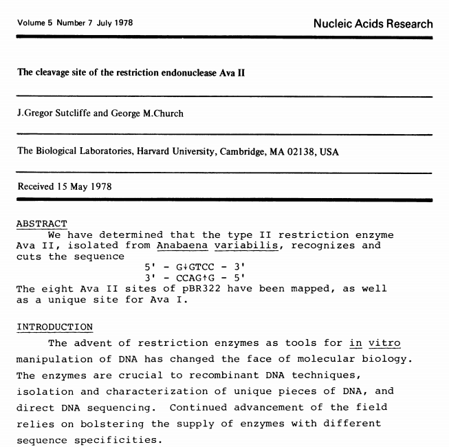

HTGAA : Bio Production
Offered in 2019 , Updated 05/30/2023 Patrick Boyle (Ginkgo Bioworks) (MIT)
Assignment
Read and annotate the sequence files for a DNA molecule. Isolate that DNA from cells, run an enzymatic reaction on it, and show the change you made. See Example Lab and Pro Challenge below.
Hardware, Software, Wetware
| Function | Wetware |
|---|---|
| Plasmid harvesting from E. coli | ZymoPure Plasmid Miniprep Kit |
| E. coli with DNA plasmids | Addgene pPSU1 and pPSU2 bacterial stabs in vials |
| Restriction enzymes | NEB PstI-HF and EcoRV-HF |
| Gel electrophoresis | TAE Buffer (Tris-acetate-EDTA), Agarose, Loading dye, DNA stain, 100bp and 1kbp molecular-weight markers (DNA ladders) |
| Function | Hardware |
|---|---|
| Temperature control for enzyme reactions | Thermocycler, water bath, incubator, or heat block |
| Electrophoresis gel prep | Microwave and balance |
| DNA size separation | Gel electrophoresis box and power supply |
| DNA visualization | Blue-LED transilluminator |
| DNA measurement | Spectrophotometer |
| Function | Software |
|---|---|
| DNA sequence viewer/editor | Benchling, Snapgene, Geneious, ApE, GenBeans, or text editor |
| Gel Analysis | ImageJ or FIJI |
Example Lab
We will be working with Addgene plasmids pPSU1 and pPSU2 deposited by the Tan lab at Penn State University. In a 2017 paper, Henrici et al demonstrated how their plasmid designs can produce cheap DNA ladder. Note, DNA ladders are important references when measuring the size and topology of DNA products after an enzymatic reaction. The enzymes we will use for our example lab are restriction enzymes, which cut DNA at sequence-specific sites. Restriction enzymes are among the natural defense systems of bacteria to protect against viral bacteriophages. They were harnessed in the 1970's as a foundational technology for mapping and recombining DNA across all forms of life. Taking part in their characterization, George published a 1978 paper that sequenced the plasmid pBR322 to help determine the recognition sequence for the restriction enzyme AvaII.

Remember to always initial and label your tubes so you can identify their contents and distinguish them from your classmates' material.
-
Download and review the genbank sequence files for pPSU1 and pPSU2.
- What software are you using to read the sequence files?
- What are the distances between the PstI (CTGCAG) sites in each plasmid?
- What are the distances between the EcoRV (GATATC) sites in each plasmid?
- Where do PstI and EcoRV cut within their recognition sequences?
- What gene is encoded into the plasmids?
- How many copies of the plasmid would you roughly expect in each cell?
- How do the plasmids' replication relate to that of pBR322 (genbank)?
-
Harvest pPSU1 and pPSU2 DNA from overnight E. coli culture using the ZymoPure Plasmid Miniprep Kit and elute with water. The following protocol is copied from Zymo Research.
- From the freezer, collect pelleted overnight liquid cultures. They are labeled "pPSU1 α" and "pPSU2 α", as the growth strain is DH5alpha. Each pellet was prepared by spinning 1.5 mL of overnight culture at 8,000 rpm (6,800 x g) for 3 minutes.
- To each pellet, add 250 µl of ZymoPURE™ P1 (Red) to the bacterial cell pellet and resuspend completely by vortexing or pipetting.
- Add 250 µl of ZymoPURE™ P2 (Green) and immediately mix by gently inverting the tube 6-8 times. Do not vortex! Let sit at room temperature for 2-3 minutes. Cells are completely lysed when the solution appears clear, purple, and viscous
- Add 250 µl of ice cold ZymoPURE™ P3 (Yellow) and mix thoroughly by inversion. Do not vortex! Invert the tube an additional 3-4 times after the sample turns completely yellow. The sample will turn yellow when the neutralization is complete and a yellowish precipitate will form.
- Incubate the neutralized lysate on ice for 5 minutes.
- Centrifuge the neutralized lysate for 5 minutes at 13,000 rpm (~17,900 x g).
- Transfer 600 µl of supernatant from step 6 into a clean 1.5 ml microcentrifuge tube. Be careful not to disturb the yellow pellet and avoid transferring any cellular debris to the new tube
- Add 275 µl of ZymoPURE™ Binding Buffer to the cleared lysate from step 7 and mix thoroughly by inverting the capped tube 8 times.
- Place a Zymo-Spin™ II-P Column in a Collection Tube and transfer the entire mixture from step 8 into the Zymo-Spin™ II-P Column.
- Incubate the Zymo-Spin™ II-P/Collection Tube assembly at room temperature for 2 minutes and then centrifuge at 6,000 rpm (~5,900 x g) for 1 min. Discard the flow through.
- Add 800 µl of ZymoPURE™ Wash 1 to the Zymo-Spin™ II-P Column and centrifuge at 6,000 rpm (~5,900 x g) for 1 min. Discard the flow through.
- Add 800 µl of ZymoPURE™ Wash 2 to the Zymo-Spin™ II-P Column and centrifuge at 6,000 rpm (~5,900 x g) for 1 min. Discard the flow through.
- Add 200 µl of ZymoPURE™ Wash 2 to the Zymo-Spin™ II-P Column and centrifuge at 6,000 rpm (~5,900 x g) for 1 min. Discard the flow through.
- Centrifuge the Zymo-Spin™ II-P Column at 13,000 rpm (~17,900 x g) for 1 minute in order to remove any residual wash buffer.
- Transfer the Zymo-Spin™ II-P Column into a clean 1.5 ml tube and add 25 µl of DNase/RNase-Free water directly to the column matrix. Incubate at room temperature for 2 minutes, and then centrifuge at 13,000 rpm (~17,900 x g)for 1 minute in a microcentrifuge.
-
Measure the concentration of your pPSU1 and pPSU2 DNA preps using the Nanodrop spectrophotometer.
- Clean stage with Kimwipe soaked with DI water.
- Wipe stage with dry Kimwipe.
- Add 2 uL DI water on stage and make blank measurement.
- Wipe stage with dry Kimwipe.
- For each DNA sample, add 2 uL and measure and record the concentration (ng/uL). Wipe stage dry with Kimwipe between measurements.
- To finish, clean stage with Kimwipe soaked with DI water and then wipe dry.
-
In separate digestion reactions with either the NEB enzymes PstI-HF or EcoRV-HF, cut both pPSU1 and pPSU2 DNA.
- If plasmid yields are greater than 500 ng/uL in concentration, prepare a dilution of your plasmid with water to a concentration of 100 ng/uL and total volume greater than 10 uL. If a plasmid yield is less than 2 ug in total yield (concentration x volume), either repeat the prep or use as much as you have available for the two digestion reactions and uncut controls.
-
Prepare reaction with EcoRV-HF in a PCR tube (add enzyme last):
To Reaction Volume (50 uL Totral) 1 ug pPSU1 DNA X uL 1 ug pPSU2 DNA Y uL DNase/RNase-Free Water 43-X-Y uL NEB Buffer CutSmart 5 uL NEB EcoRV-HF 2 uL -
Prepare reaction with PstI-HF in a PCR tube (add enzyme last):
To Reaction Volume (50 uL Totral) 1 ug pPSU1 DNA X uL 1 ug pPSU2 DNA Y uL DNase/RNase-Free Water 43-X-Y uL NEB Buffer CutSmart 5 uL NEB PstI-HF 2 uL - Incubate reactions at 37C for 15 minutes in thermocycler.
-
Run the reactions alongside 100bp and 1kbp DNA ladder and uncut plasmid controls on a 1% agarose gel stained with SYBR-Safe at 120V for 1 hour. Scale down steps (i) and (ii) below by 1/3 if you are
using the smaller gel box.
- Weigh 1.5 g agarose and add into 150 mL 1xTAE. Microwave until agarose completely dissolves.
- Add 15 uL of 10000xSYBR-Safe DNA stain. Use heat-resistant glove to gently swirl to mix (careful of burn hazard). Pour into rotated gel box tray (check beforehand that seal is watertight and do not fill past the bottom of the comb slots) and insert comb.
- Wait 45-60 minutes for gel to set.
- Remove comb and rotate tray so lanes are closest to cathode (black cable). Fill gel box with 1xTAE until gel is submerged.
-
Load the following into separate lanes.
To Lane Pre-Mix NEB 100 bp Ref Ladder 2 uL 100 bp DNA Ladder (500 ng/ul) + 48 uL water + 10 uL 6xGel Loading Dye NEB 1 kb Ref Ladder 2 uL 1 kb DNA Ladder (500 ng/ul) + 48 uL water + 10 uL 6xGel Loading Dye Uncut pPSU1 Neg Control X uL for 1 ug pPSU1 DNA + 50-X uL water + 10 uL 6xGel Loading Dye Uncut pPSU2 Neg Control Y uL for 1 ug pPSU2 DNA + 50-Y uL water + 10 uL 6xGel Loading Dye EcoRV-HF Digest Reaction 50 uL of Digest Reaction + 10 uL 6xGel Loading Dye PstI-HF Digest Reaction 50 uL of Digest Reaction + 10 uL 6xGel Loading Dye - Insert gel box lid, connect cables to power supply, and run at 120V for 1 hour.
-
Image the gels with a transilluminator and analyze the banding patterns.
- Save gel image for further analysis.
- Plot the distance each band traveled (relative to the largest fragment) versus the lengths of the DNA fragments. See FIJI gel analysis tutorial below for help. If your gel image is difficult to analyze, you are welcome to ask a classmate for their image or perform your analysis on Fig4 from Henrici et al.
- For the banding from the EcoRV-HF digestion, explain the relative brightnesses of the 500 bp and the 5 kb bands.
- For the banding from the PstI-HF digestion, explain the relative brightnesses of the 500 bp and the 600 bp bands.
Pro Challenge
Add a restriction site into the E. coli genome through lambda-red recombination.
For this week, provide the oligo design that achieves your proposed genomic edit and describe what impact this change may have on the genetic code. In later weeks, you will carry out this recombination within the electroporator you build, and soon after measure your genome editing efficiency. Recall, George described lambda red recombination as being so precise that it can do what CRISPR can only wish to accomplish, for now.
Useful Resources
- Molecular biology reference: Addgene
- Demo videos for essential synbio skills: Synthetic Biology One
- Parts of a plasmid
- Collecting DNA from cells
- Recombination with restriction enzymes
- Restriction enzyme digests
- DNA size separation
- Gel analysis tutorial: FIJI GelAnalyzer
- Genomic vs plasmid extraction: The Difference
- Agarose vs agar-agar: CheapA** Science
- Textbook entry on DNA cloning: Molecular Cell Biology. 4th edition
- Textbook entry on DNA profiling: Molecular Cell Biology. 4th edition
- Tutorials and tips: Bitesize Bio
- Protocol collection wiki: Open Wetware
- Protocol collection repo: NEB on Protocols.io
Opentrons Script
To be added